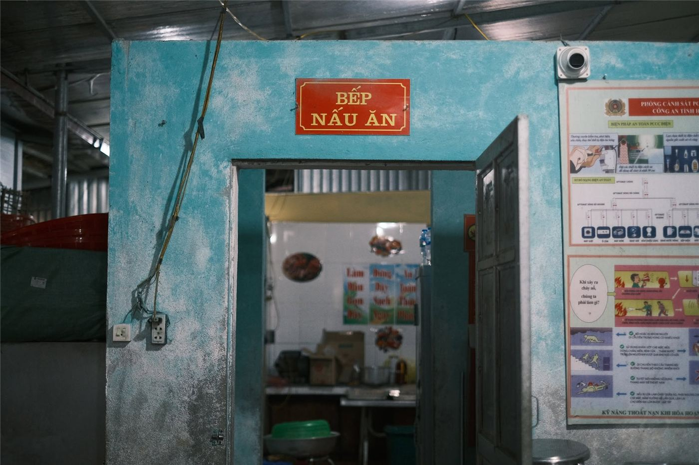
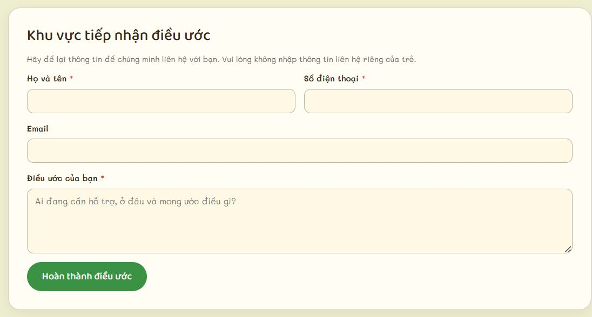
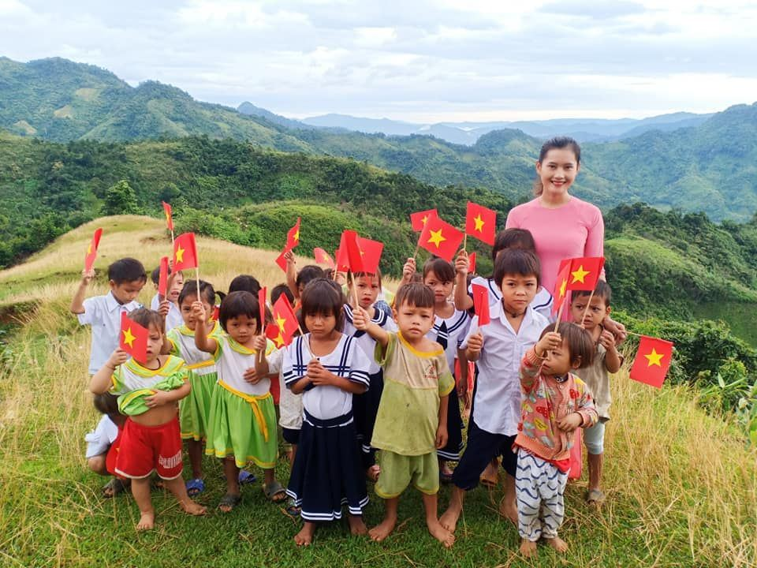
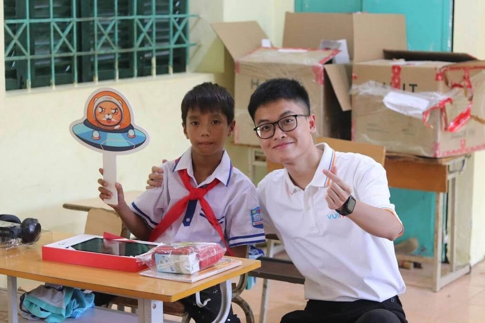
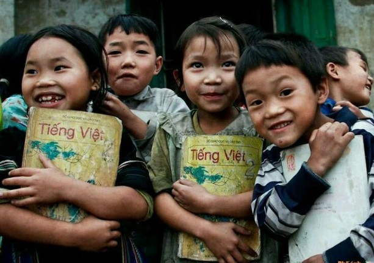
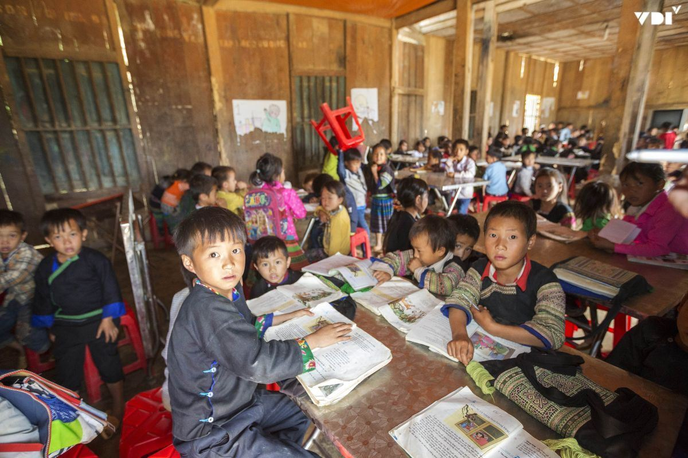

Phản ánh 02
Từ nhu cầu của lớp học đến kế hoạch hỗ trợ thiết thực
Không phải cứ trao tặng thật nhiều sách vở, thiết bị hay quà tặng là đã đáp ứng đúng nhu cầu của một điểm trường. Muốn nguồn lực đến đúng nơi, việc hỗ trợ cần bắt đầu từ những khó khăn cụ thể của nhà trường, được sắp xếp theo mức độ ưu tiên và có phương án theo dõi sau khi triển khai.
Bắt đầu từ những điều nhà trường thực sự cần
Trong báo cáo tổng kết năm học 2024–2025, Trường Phổ thông dân tộc bán trú Tiểu học số 2 Mường Mươn, huyện Mường Chà, tỉnh Điện Biên cho biết trường có 5 điểm trường, trong đó 4 điểm nằm ở khu vực vùng cao. Khoảng cách xa trung tâm và điều kiện đi lại khó khăn ảnh hưởng đến việc quản lý, tổ chức hoạt động giáo dục tại các điểm trường lẻ.
Báo cáo cũng nêu một số hạn chế về cơ sở vật chất: các điểm trường vùng cao chưa có điện lưới quốc gia; trường thiếu phòng chức năng, thư viện và thiết bị; một số lớp tại điểm trường trung tâm phải sử dụng phòng học tạm. Khuôn viên trường hẹp, chưa có sân chơi; khu vệ sinh dành cho học sinh bán trú đã xuống cấp, trong khi bếp và phòng ăn bán trú là nhà tạm.

Ở chiều ngược lại, báo cáo cho biết học sinh đã có đủ sách giáo khoa, vở viết và đồ dùng học tập các môn học. Đây là chi tiết quan trọng khi xác định phương án hỗ trợ: thay vì mặc định nhà trường cần thêm sách vở, các đơn vị đồng hành cần căn cứ vào tình hình thực tế để lựa chọn nội dung phù hợp hơn.
Những thông tin trên cho thấy nhu cầu của một trường học không chỉ nằm ở đồ dùng học tập của từng học sinh. Điều kiện tổ chức lớp học, sinh hoạt bán trú, vệ sinh và khả năng triển khai các hoạt động giáo dục cũng là những vấn đề cần được xem xét. Nếu không tìm hiểu kỹ, nguồn lực có thể được chuyển đến những hạng mục đã tương đối đầy đủ, trong khi khó khăn khác vẫn chưa được giải quyết.
Từ danh sách khó khăn đến thứ tự ưu tiên
Khi đã xác định được nhu cầu, bước tiếp theo là phân loại và lựa chọn hạng mục cần hỗ trợ trước. Không phải mọi vấn đề đều có thể giải quyết cùng lúc, bởi mỗi hạng mục có yêu cầu khác nhau về kinh phí, thời gian, nhân lực và thẩm quyền thực hiện.
Với những nhu cầu liên quan trực tiếp đến an toàn và sinh hoạt của học sinh, chẳng hạn khu vệ sinh xuống cấp hay khu bếp ăn bán trú là nhà tạm, việc khảo sát hiện trạng và trao đổi với nhà trường cần được ưu tiên. Các hạng mục liên quan đến xây dựng, sửa chữa hoặc hệ thống điện cũng cần được đánh giá về kỹ thuật, tính an toàn, khả năng vận hành và đơn vị chịu trách nhiệm.
Trong khi đó, những hỗ trợ quy mô nhỏ hơn có thể được xây dựng thành kế hoạch riêng, tùy theo nhu cầu đã được xác nhận. Điều quan trọng là không lựa chọn hạng mục chỉ vì dễ vận động tài trợ hoặc thuận tiện tổ chức trao tặng, mà cần xem xét mức độ cần thiết và khả năng tạo ra thay đổi thực tế cho học sinh.
Một kế hoạch hỗ trợ cụ thể nên trả lời được những câu hỏi cơ bản: Nhà trường đang cần gì? Hạng mục nào cấp thiết hơn? Ai xác nhận nhu cầu? Nguồn lực cần huy động gồm những gì? Ai chịu trách nhiệm tiếp nhận, triển khai và kiểm tra kết quả?
Kết nối đúng nguồn lực, theo dõi đến cùng
Từ nhu cầu đã được xác minh, Chuyện Trên Non có thể đóng vai trò kết nối giữa nhà trường và các cá nhân, doanh nghiệp, tổ chức mong muốn đồng hành với giáo dục vùng cao. Tuy nhiên, kết nối không nên dừng lại ở việc đăng tải một lời kêu gọi chung chung. Mỗi đề xuất cần nêu rõ mục đích, hạng mục, dự toán hoặc nguồn lực cần thiết, đơn vị tiếp nhận và phương án sử dụng.

Chẳng hạn, nếu nhà trường xác nhận cần cải thiện một hạng mục cơ sở vật chất, kế hoạch hỗ trợ cần có thông tin cụ thể về hiện trạng, phạm vi công việc, kinh phí dự kiến và đơn vị có chuyên môn thực hiện. Với những hạng mục vượt quá khả năng của một nhóm thiện nguyện, cần phối hợp với nhà trường, chính quyền hoặc cơ quan có thẩm quyền thay vì tự triển khai.
Sau khi hỗ trợ được thực hiện, việc cập nhật kết quả cũng quan trọng không kém. Thông tin cần cho biết nguồn lực đã được tiếp nhận ra sao, hạng mục nào đã hoàn thành, học sinh được hưởng lợi như thế nào và còn vấn đề gì cần tiếp tục giải quyết. Hình ảnh, số liệu và thông tin công khai cần được xác minh; hình ảnh học sinh phải được sử dụng phù hợp, tôn trọng quyền riêng tư và lợi ích của trẻ.
Một kế hoạch hỗ trợ thiết thực không nhất thiết phải bắt đầu bằng khoản tài trợ lớn. Điều quan trọng là xác định đúng vấn đề, lựa chọn việc có thể làm, phân công rõ trách nhiệm và theo dõi đến khi có kết quả.
Từ câu chuyện của Trường Phổ thông dân tộc bán trú Tiểu học số 2 Mường Mươn, có thể thấy việc hỗ trợ giáo dục vùng cao cần bắt đầu bằng việc lắng nghe nhà trường và tìm hiểu điều kiện thực tế. Khi nhu cầu được xác định rõ, nguồn lực mới có cơ hội đến đúng nơi, đúng lúc và tạo ra thay đổi phù hợp với đời sống học đường.
◆ ◆ ◆
Tin liên quan
Xem thêm »
Người giữ lửa lớp học ở Na SangTừ trang sách, em hình dung về thế giới rộng lớn
Quỹ Hy Vọng triển khai chương trình hỗ trợ thư viện cho học sinh vùng cao
Chuyện Trên Non kết nối nhu cầu học tập với nguồn lực cộng đồng
Những trang sách ở Kim Đồng: Khi nhu cầu đọc cần được lắng nghe